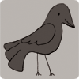

Υπάρχουν περίπου 10.000 ζώντα είδη πουλιών που ζουν σε διαφορετικά οικοσυστήματα από την Αρκτική έως την Ανταρκτική. Πολλά είδη πραγματοποιούν ετήσιες μεταναστεύσεις μεγάλων αποστάσεων, και πολλά άλλα κάνουν συντομότερα ακανόνιστα ταξίδια.Υπάρχουν περίπου 10.000 ζώντα είδη πουλιών που ζουν σε διαφορετικά οικοσυστήματα από την Αρκτική έως την Ανταρκτική. Πολλά είδη πραγματοποιούν ετήσιες μεταναστεύσεις μεγάλων αποστάσεων, και πολλά άλλα κάνουν συντομότερα ακανόνιστα ταξίδια.
Υπάρχουν περίπου 10.000 ζώντα είδη πουλιών που ζουν σε διαφορετικά οικοσυστήματα από την Αρκτική έως την Ανταρκτική. Πολλά είδη πραγματοποιούν ετήσιες μεταναστεύσεις μεγάλων αποστάσεων, και πολλά άλλα κάνουν συντομότερα ακανόνιστα ταξίδια.
Ρυθμίστε πώς στοιχίζεται η εικόνα σε σχέση με τη γραμμή κειμένου χρησιμοποιώντας align="top", align="middle" ή align="bottom".
<!DOCTYPE html>
<html lang="el">
<head>
<meta charset="utf-8">
<title>Κατακόρυφη Στοίχιση Εικόνων</title>
</head>
<body>
<div style="width:450px">
<p><img src="images/bird.gif" alt="Πουλί" width="100" height="100" align="top" /> Υπάρχουν περίπου 10.000 ζώντα είδη πουλιών που ζουν σε διαφορετικά οικοσυστήματα από την Αρκτική έως την Ανταρκτική. Πολλά είδη πραγματοποιούν ετήσιες μεταναστεύσεις μεγάλων αποστάσεων, και πολλά άλλα κάνουν συντομότερα ακανόνιστα ταξίδια.</p>
<hr />
<p><img src="images/bird.gif" alt="Πουλί" width="100" height="100" align="middle" /> Υπάρχουν περίπου 10.000 ζώντα είδη πουλιών που ζουν σε διαφορετικά οικοσυστήματα από την Αρκτική έως την Ανταρκτική. Πολλά είδη πραγματοποιούν ετήσιες μεταναστεύσεις μεγάλων αποστάσεων, και πολλά άλλα κάνουν συντομότερα ακανόνιστα ταξίδια.</p>
<hr />
<p><img src="images/bird.gif" alt="Πουλί" width="100" height="100" align="bottom" /> Υπάρχουν περίπου 10.000 ζώντα είδη πουλιών που ζουν σε διαφορετικά οικοσυστήματα από την Αρκτική έως την Ανταρκτική. Πολλά είδη πραγματοποιούν ετήσιες μεταναστεύσεις μεγάλων αποστάσεων, και πολλά άλλα κάνουν συντομότερα ακανόνιστα ταξίδια.</p>
</div>
</body>
</html>